Свидетельство на товарный знак, патент на способ производства пастилы и разрешительные документы «Терского консервного завода». Нажмите на документ, чтобы открыть в полном размере.
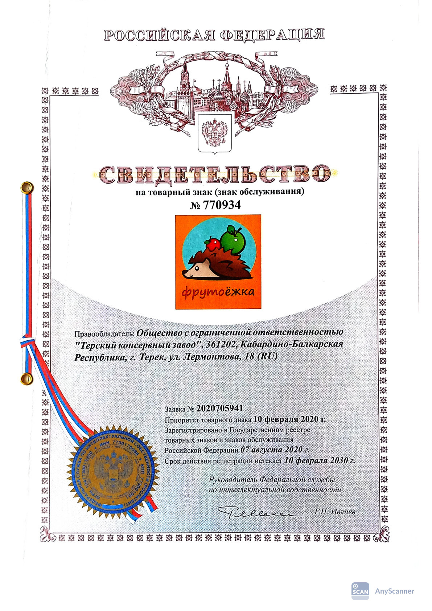
Свидетельство на товарный знак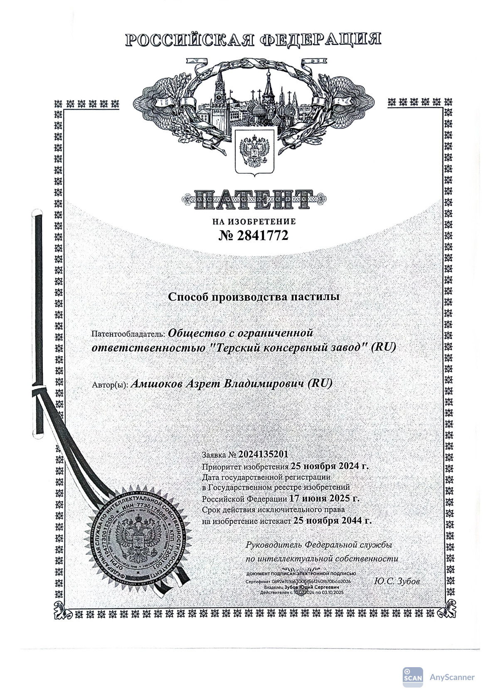
Патент на способ производства пастилы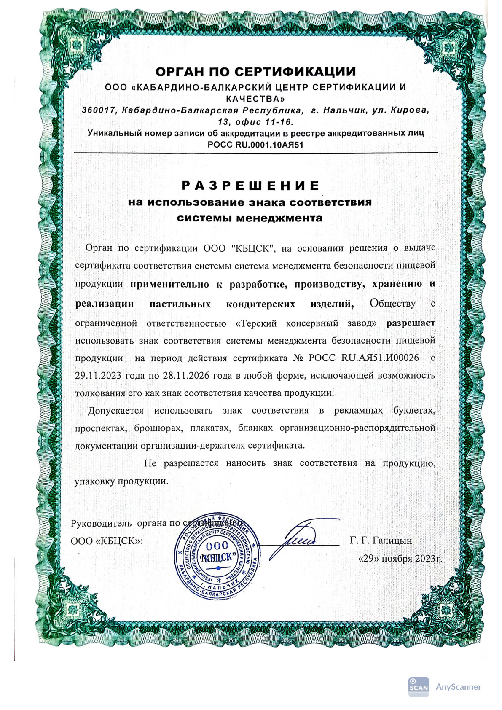
Разрешение на знак соответствия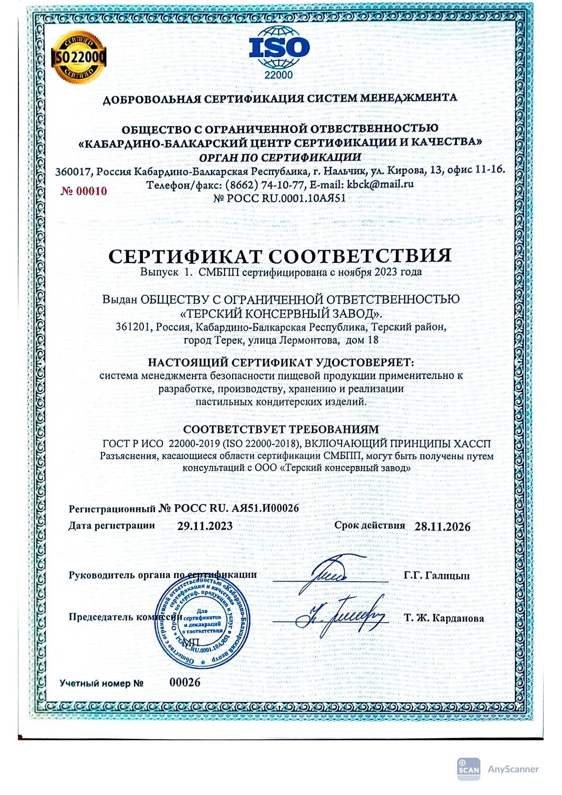
Документ 4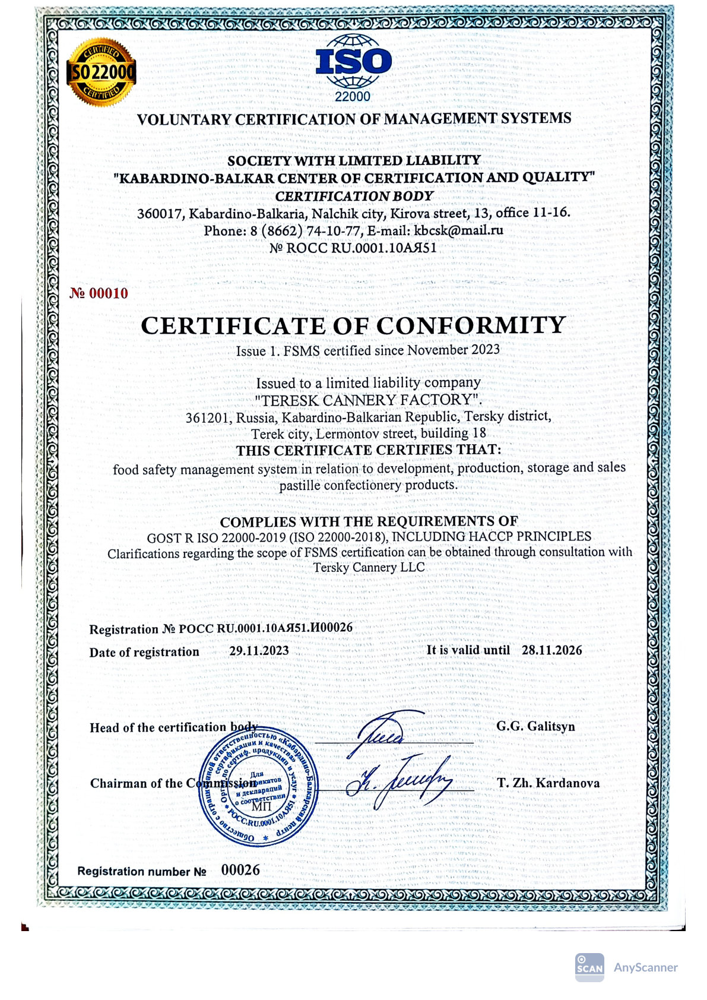
Документ 5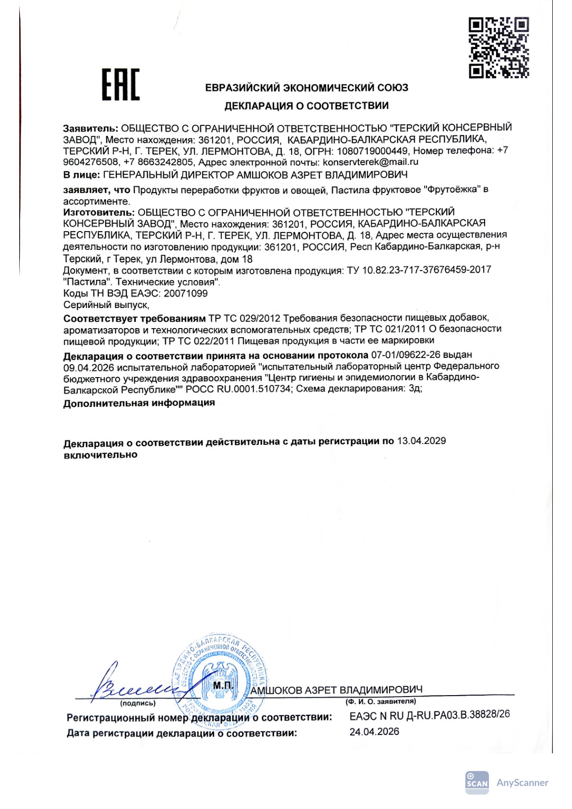
Документ 6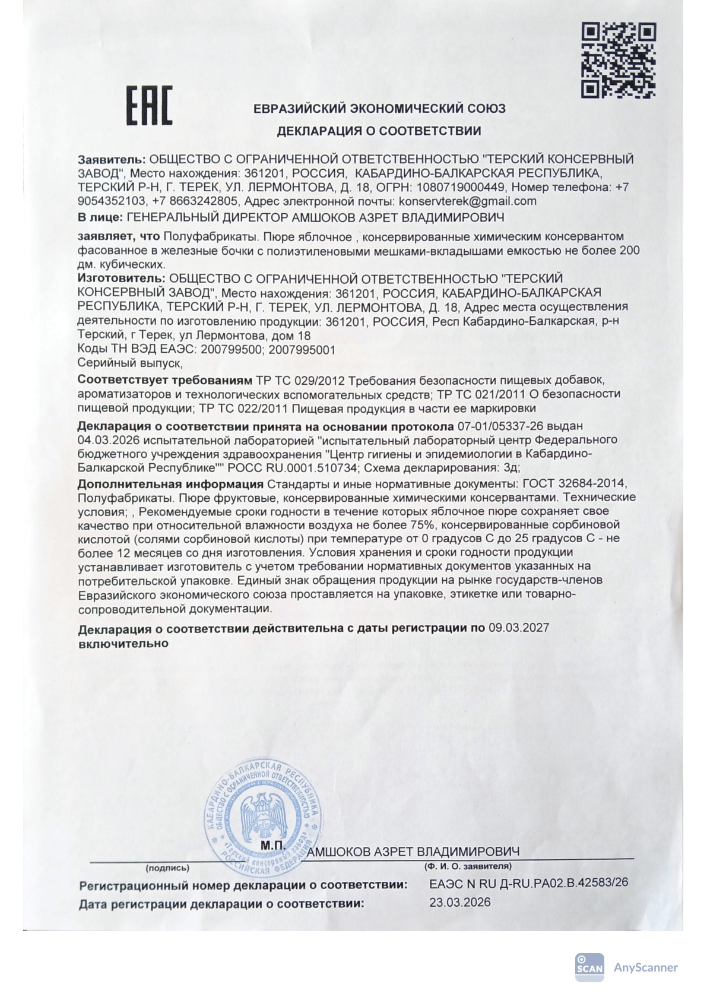
Документ 7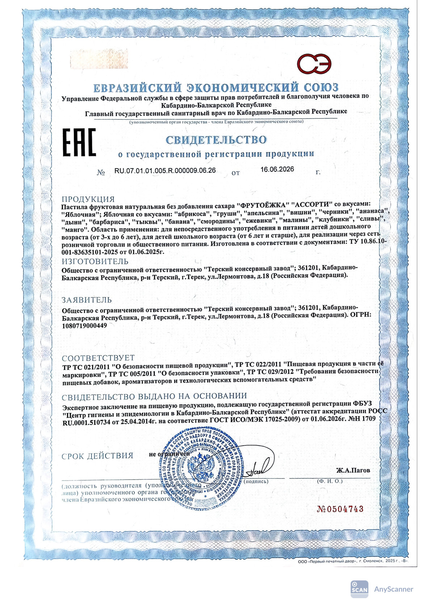
Документ 8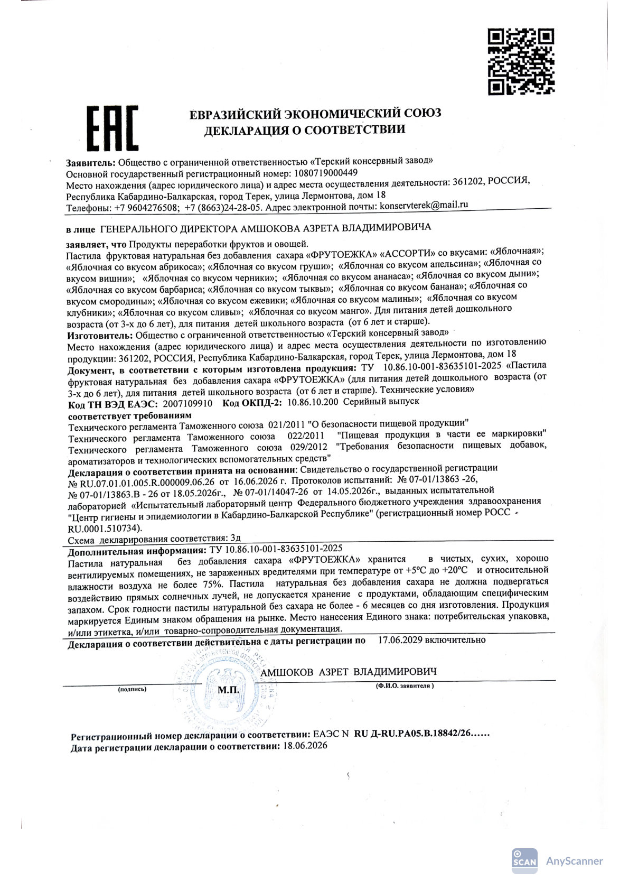
Документ 9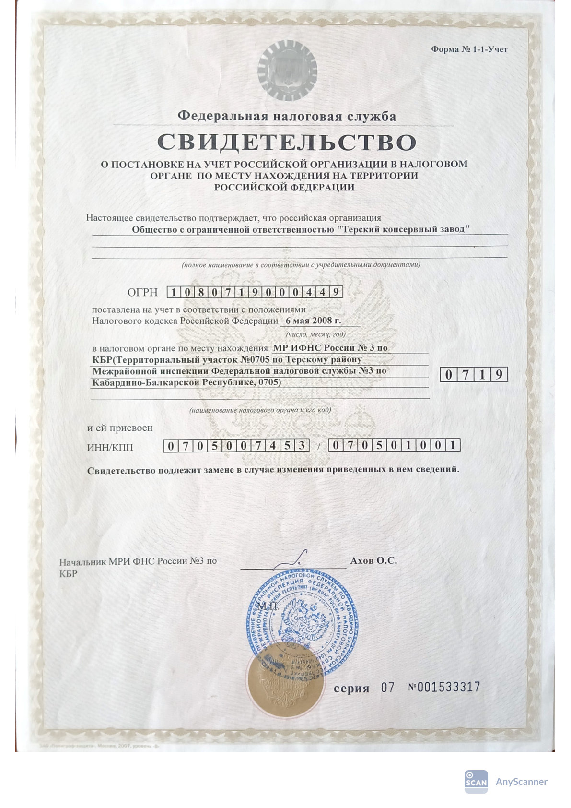
Документ 10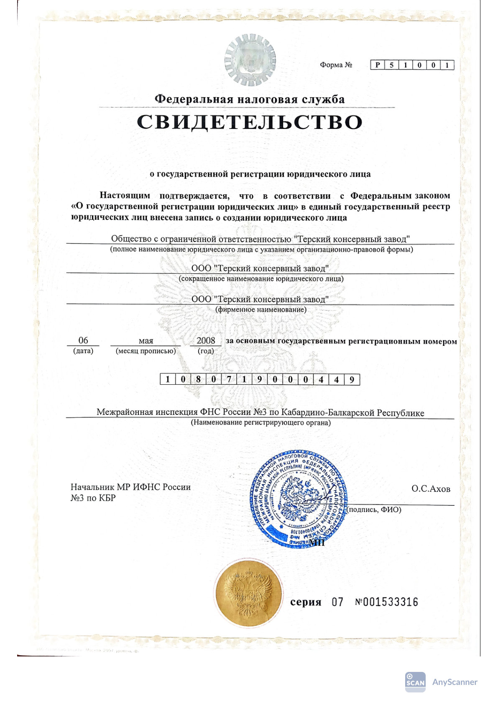
Документ 11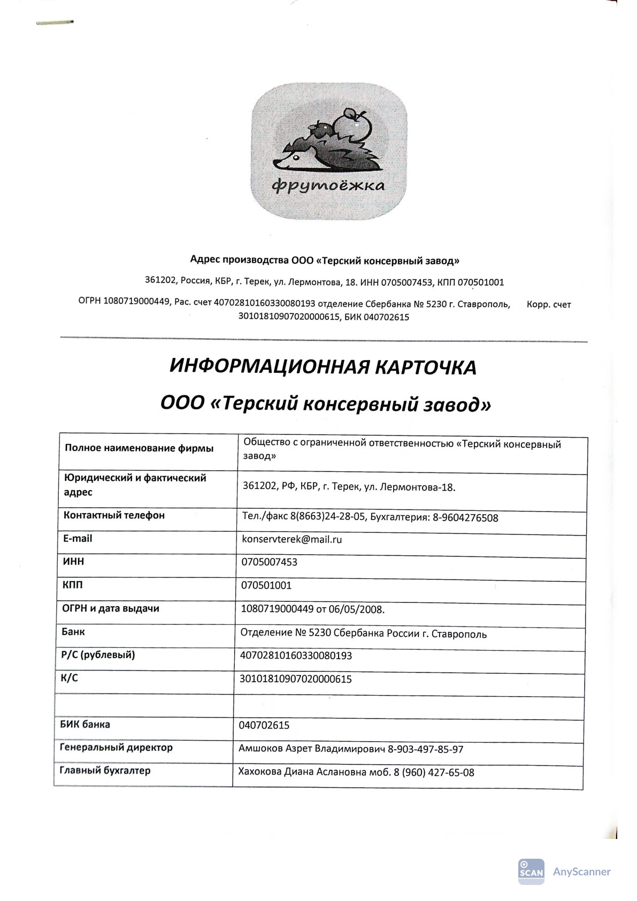
Документ 12